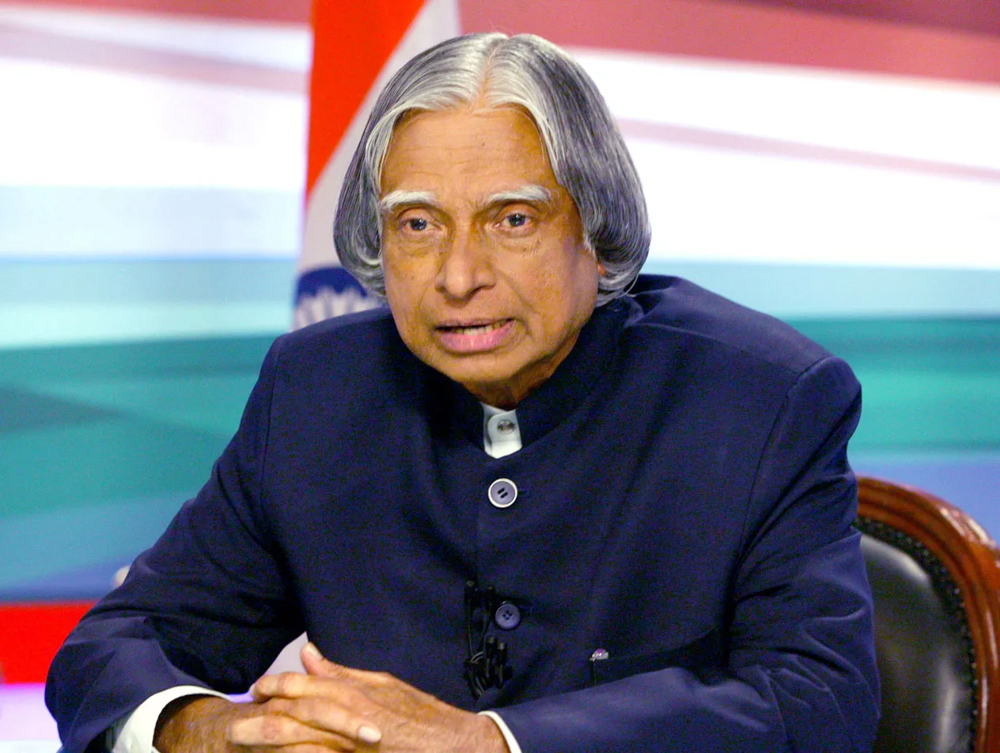

Tribute page

Former President of India.
Here's a time line of A. P. J. Abdul Kalam's life:
- 1931 - Born in Rameswaram, Tamil Nadu.
- 19354 - He went on to attend "Saint Joseph's College",
Tiruchirappalli, then affiliated with the University of Madras, from where he
graduated in physics.
- 1955 - He moved to Madras to study aerospace engineering in
Madras Institute of Technology.
- 1960 - He joined the Aeronautical Development Establishment
of the Defence Research and Development Organisation (by Press Information Bureau,
Government of India) as a scientist after becoming a member of the Defence Research
& Development Service (DRDS).
- 1963-1964 -
- 1965 - he visited NASA's Langley
Research Center in Hampton, Virginia; Goddard Space Flight Center in Greenbelt,
Maryland; and Wallops Flight Facility.
- 1965 - He had first started work on an expandable rocket project
independently at DRDO.
- 1969 - He received the government's approval and expanded the
programme to include more engineers.
He was transferred to the Indian Space Research Organisation (ISRO) where he was
the project director of India's first Satellite Launch Vehicle (SLV-III).
- 1970s - He also directed two projects, Project Devil and Project
Valiant, which sought to develop ballistic missiles from the technology of the
successful SLV programme.
- 1980 - Satellite Launch Vehicle (SLV-III) which successfully
deployed the Rohini satellite in near-earth orbit.
- 1980s - His research and educational leadership brought him
great laurels and prestige, which prompted the government to initiate an advanced
missile programme under his directorship.
- 1970s-1990s - He made an effort to develop the Polar Satellite
Launch Vehicle (PSLV) and SLV-III projects, both of which proved to be successful.
- 1992-1999 - He served as the Chief Scientific Adviser to the Prime
Minister and Secretary of the Defence Research and Development Organisation.
The Pokhran-II nuclear tests were conducted during this period in which he played an
intensive political and technological role. He served as the Chief Project Coordinator,
along with Rajagopala Chidambaram, during the testing phase.
Media coverage of Kalam during this period made him the country's best known nuclear scientist.
- 1998 - along with cardiologist Soma Raju, He developed a low cost coronary stent,
named the "Kalam-Raju Stent".
- 2002-2007 - He served as the 11th president of India.
- 2003 - In an interactive session in PGI Chandigarh, He supported the need of
Uniform Civil Code in India, keeping in view the population of the country.
- 2005 - He also took the controversial decision to impose President's Rule in Bihar.
- 2011 - He was criticised by civil groups over his stand on the Koodankulam Nuclear
Power Plant; he supported the establishment of the nuclear power plant and was accused of not speaking
with the local people.
- 2012 - The duo(A P J Abdul Kalam & Soma Raju) designed a rugged tablet computer for
health care in rural areas, which was named the "Kalam-Raju Tablet".
Kalam launched a programme for the youth of India called the What Can I Give Movement, with a central
theme of defeating corruption.
- 2015 - Kalam travelled to Shillong to deliver a lecture on "Creating a Livable Planet
Earth" at the Indian Institute of Management Shillong. While climbing a flight of stairs, he experienced
some discomfort, but was able to enter the auditorium after a brief rest. At around 6:35 p.m. IST, only
five minutes into his lecture, he collapsed.[85][86] He was rushed to the nearby Bethany Hospital in a
critical condition; upon arrival, he lacked a pulse or any other signs of life. Despite being placed in
the intensive care unit, He was confirmed dead of a sudden cardiac arrest at 7:45 p.m. IST.
If you have time, you should read more about this incredible human being on his
Wikipedia entry.